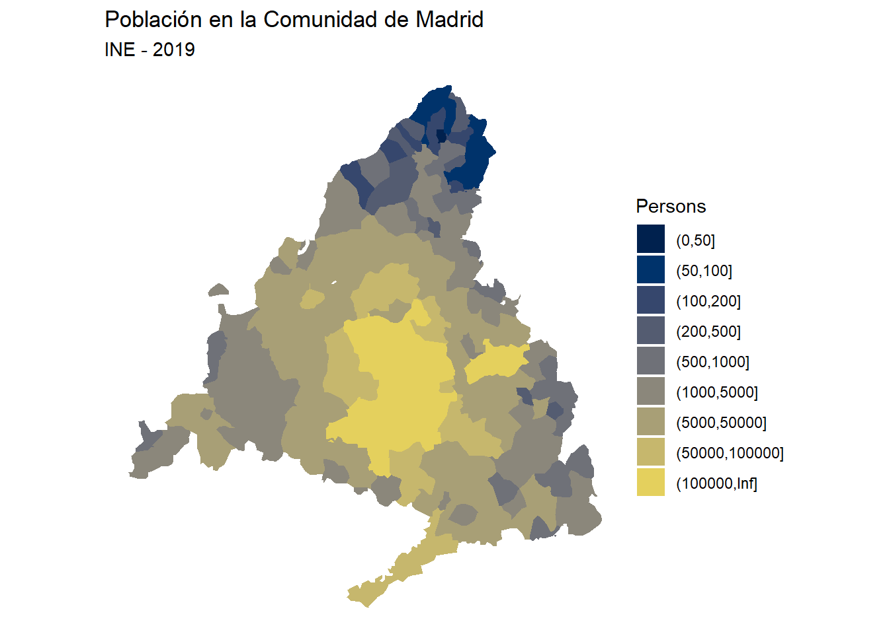

# Uso básico
mdef <- leaflet() %>%
addTiles() %>% # Add default OpenStreetMap map tiles
setView(lng = -4.13244, lat = 40.5853, zoom = 12)
mdef# https://github.com/rOpenSpain/mapSpain
# Get munics https://rdrr.io/cran/mapSpain/man/esp_get_munic.html
Base <- esp_get_munic(year = "2019", region = "Comunidad de Madrid")
# Provs for delimiting
# provs <- esp_get_prov(prov = "Castilla y Leon")
# Load population data
data("pobmun19")
# Arrange and create breaks
Base_pop <- merge(Base, pobmun19,
by = c("cpro", "cmun"),
all.x = TRUE
)
br <- sort(c(
0, 50, 100, 200, 500,
1000, 5000, 50000, 100000,
Inf
))
Base_pop$cuts <- cut(Base_pop$pob19, br, dig.lab = 20)
# Plot
ggplot(Base_pop) +
geom_sf(aes(fill = cuts), color = NA) +
scale_fill_manual(values = hcl.colors(length(br), "cividis")) +
labs(
title = "Población en la Comunidad de Madrid",
subtitle = "INE - 2019",
fill = "Persons"
) +
theme_void()